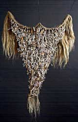
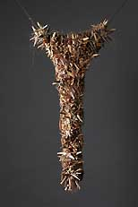
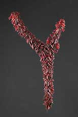

| Zen Parry
Australian ceramist

With
an art practice based on pilgrimages, Australian ceramist Zen Parry’s
haunting archetypes seem to carry a message that transcends an individuals’
cultural reference or heritage. Zen’s signature triangular
form is a metaphor for the dark corners of the human psyche, i.e.
those thoughts that you would rather not confront. These pilgrimages
can take up to 4 months to complete, and are often grueling exercises
in discipline and physicality involving endurance and mental focus.
It is when the walking cycle has been completed that she retreats
to her studio so that the real journey may begin. Her latest works
include the cult of the Black Madonna in Poland, inspiration from
walking along the River Ganges in India and completing the 88 temple
circular pilgrimage on Shikoku island, Japan.
Zen’s educational background is non-art focused, however,
her working method is entirely craft based. Her application of ceramic
principles is minimal, preferring instead to work with pit-fired
clay, and components that are hand made and assembled, borne of
process and ritual, not wheel and kiln. She was received numerous
grants and awards for her sculptural work, and prefers a lifestyle
based on experiencing different cultures directly when ever possible.
Currently she is balancing her art career between the USA, Eastern
Europe and Korea.
Artist Statement:
Archetypal forms, and their undercurrents, have always inspired
me, and have now become the primary form of expression in the artwork
that I create. As a global Artist these forms create a universal
language that is understood or sensed well beyond geographic or
political borders.
As a Sculptor, I am focused on ‘making by hand’, preferring
to incorporate the marks of each process boldly and actively, and
to present commonplace craft traditions in surprising and contemporary
ways. These traditions are often learnt and studied in cultures
outside of my own.

Preferred materials are pit-fired or raku ceramics and natural
fibers, both of which respond to intimate touch that creates a bond
with the maker that can then be transmitted to the viewer. As a
counterpoint to that aesthetic, the same forms are also constructed
using glass, electronic sensors and fiber optics. The glass components
are constructed using torchwork techniques, and the fiber optics
and sensors are incorporated inside each pod. These independent
works are often combined in large installations. The audience is
invited into the environment so that they may experience the tactile
qualities and ponder the sculptural and conceptual qualities of
the work in that space.
These sculptures are like personal signposts and mementos from
each journey and adventure that is undertaken. They can imply different
emotions or experiences, and never fail to engage the viewer on
some level. Where the ceramic works might draw the viewer to them,
the glass works arrest the audience in their passage, creating a
very different visual relationship. I always hope that both forms
will entice the audience to return, again and again.
Zen’s website – www.ovoo.com
Photography Credit – Paul Foster Photography
Zen’s next installations will be at The Castle, Ceske Krumlov
in the Czech Republic from 1 May – 30 Oct 2006 (www.virtual-gallery.cz),
and at the Contemporary Crafts Museum and Gallery, Portland, Oregon,
USA from Sep 30 – Nov 14 2006 (www.contemporarycrafts.org)
More Featured Artists
More Articles
|
{kind=link}
{kind=link}
{kind=link}